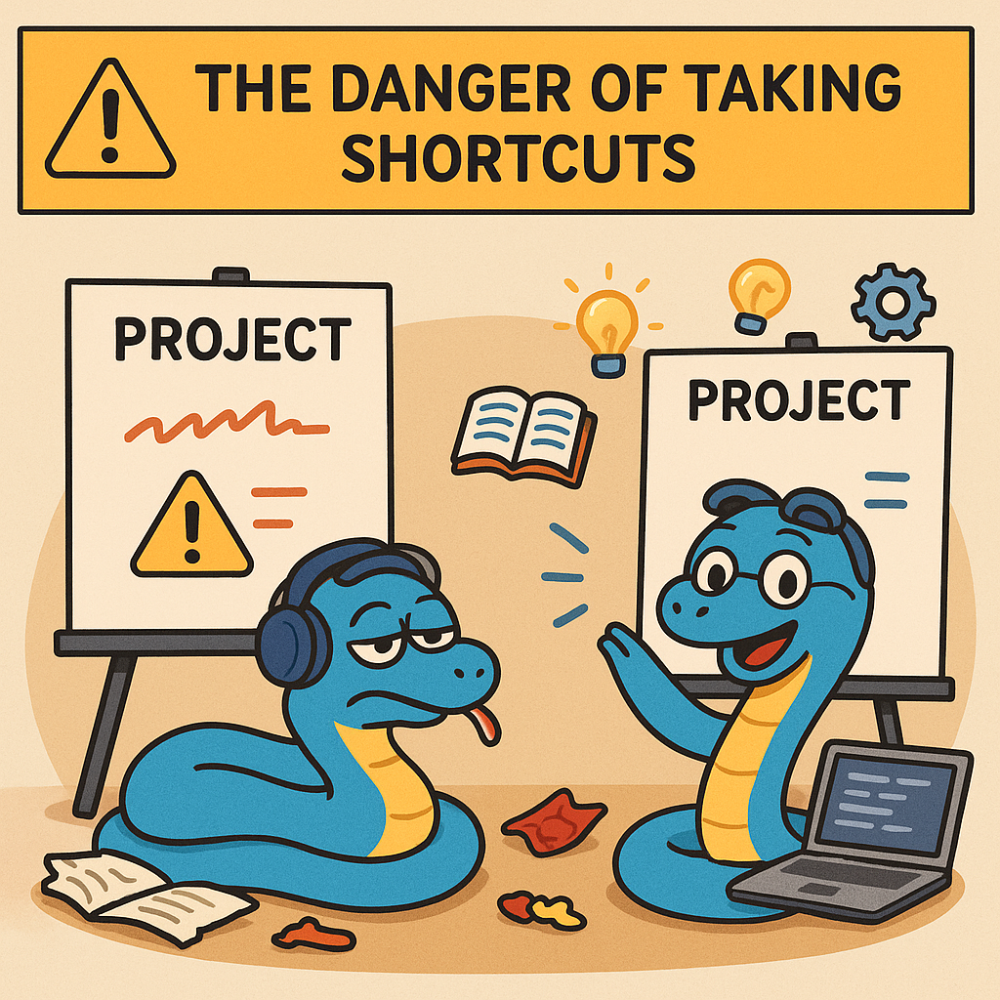

GitHUB Copilot#
The notebook intelligence package integrates GitHUB Copilot with Jupyter lab. You need a GitHUB account, and then to log in to it in the side menubar:

You will have to do this each time you start Jupyter Lab. After that, you will see the GitHUB Copilot icons activated.
If you click on the icon in a cell, it will ask you for a prompt to generate code. Alternatively if you right click on a cell, you will get a Copilot menu with some options to generate, fix or explain the code in the cell.
# nbi-prompt: Write a function for the right hand side of dy/dx = k1 x
def right_hand_side(x, k1):
"""
Calculate the right hand side of the differential equation dy/dx = k1 * x.
Parameters:
x (float): The value of x.
k1 (float): The constant k1.
Returns:
float: The value of k1 * x.
"""
return k1 * x
Jupyter AI#
Here we take a sidebar to explore what we can do with AI in Jupyter.
We have installed the Jupyter AI extension in this Jupyter hub. You should check it out to see what is possible.
First you have to load the AI extension.
%load_ext jupyter_ai
---------------------------------------------------------------------------
ModuleNotFoundError Traceback (most recent call last)
Cell In[2], line 1
----> 1 get_ipython().run_line_magic('load_ext', 'jupyter_ai')
File /opt/hostedtoolcache/Python/3.12.11/x64/lib/python3.12/site-packages/IPython/core/interactiveshell.py:2504, in InteractiveShell.run_line_magic(self, magic_name, line, _stack_depth)
2502 kwargs['local_ns'] = self.get_local_scope(stack_depth)
2503 with self.builtin_trap:
-> 2504 result = fn(*args, **kwargs)
2506 # The code below prevents the output from being displayed
2507 # when using magics with decorator @output_can_be_silenced
2508 # when the last Python token in the expression is a ';'.
2509 if getattr(fn, magic.MAGIC_OUTPUT_CAN_BE_SILENCED, False):
File /opt/hostedtoolcache/Python/3.12.11/x64/lib/python3.12/site-packages/IPython/core/magics/extension.py:33, in ExtensionMagics.load_ext(self, module_str)
31 if not module_str:
32 raise UsageError('Missing module name.')
---> 33 res = self.shell.extension_manager.load_extension(module_str)
35 if res == 'already loaded':
36 print("The %s extension is already loaded. To reload it, use:" % module_str)
File /opt/hostedtoolcache/Python/3.12.11/x64/lib/python3.12/site-packages/IPython/core/extensions.py:62, in ExtensionManager.load_extension(self, module_str)
55 """Load an IPython extension by its module name.
56
57 Returns the string "already loaded" if the extension is already loaded,
58 "no load function" if the module doesn't have a load_ipython_extension
59 function, or None if it succeeded.
60 """
61 try:
---> 62 return self._load_extension(module_str)
63 except ModuleNotFoundError:
64 if module_str in BUILTINS_EXTS:
File /opt/hostedtoolcache/Python/3.12.11/x64/lib/python3.12/site-packages/IPython/core/extensions.py:77, in ExtensionManager._load_extension(self, module_str)
75 with self.shell.builtin_trap:
76 if module_str not in sys.modules:
---> 77 mod = import_module(module_str)
78 mod = sys.modules[module_str]
79 if self._call_load_ipython_extension(mod):
File /opt/hostedtoolcache/Python/3.12.11/x64/lib/python3.12/importlib/__init__.py:90, in import_module(name, package)
88 break
89 level += 1
---> 90 return _bootstrap._gcd_import(name[level:], package, level)
File <frozen importlib._bootstrap>:1387, in _gcd_import(name, package, level)
File <frozen importlib._bootstrap>:1360, in _find_and_load(name, import_)
File <frozen importlib._bootstrap>:1324, in _find_and_load_unlocked(name, import_)
ModuleNotFoundError: No module named 'jupyter_ai'
We can see what AI models are available here.
%ai list
| Provider | Environment variable | Set? | Models |
|———-|———————-|——|——–|
| ai21 | AI21_API_KEY | ❌ |
ai21:j1-largeai21:j1-grandeai21:j1-jumboai21:j1-grande-instructai21:j2-largeai21:j2-grandeai21:j2-jumboai21:j2-grande-instructai21:j2-jumbo-instruct
bedrock | Not applicable. | N/A | bedrock:amazon.titan-text-express-v1bedrock:amazon.titan-text-lite-v1bedrock:amazon.titan-text-premier-v1:0bedrock:ai21.j2-ultra-v1bedrock:ai21.j2-mid-v1bedrock:ai21.jamba-instruct-v1:0bedrock:cohere.command-light-text-v14bedrock:cohere.command-text-v14bedrock:cohere.command-r-v1:0bedrock:cohere.command-r-plus-v1:0bedrock:meta.llama2-13b-chat-v1bedrock:meta.llama2-70b-chat-v1bedrock:meta.llama3-8b-instruct-v1:0bedrock:meta.llama3-70b-instruct-v1:0bedrock:meta.llama3-1-8b-instruct-v1:0bedrock:meta.llama3-1-70b-instruct-v1:0bedrock:meta.llama3-1-405b-instruct-v1:0bedrock:mistral.mistral-7b-instruct-v0:2bedrock:mistral.mixtral-8x7b-instruct-v0:1bedrock:mistral.mistral-large-2402-v1:0bedrock:mistral.mistral-large-2407-v1:0
bedrock-chat | Not applicable. | N/A | bedrock-chat:amazon.titan-text-express-v1bedrock-chat:amazon.titan-text-lite-v1bedrock-chat:amazon.titan-text-premier-v1:0bedrock-chat:anthropic.claude-v2bedrock-chat:anthropic.claude-v2:1bedrock-chat:anthropic.claude-instant-v1bedrock-chat:anthropic.claude-3-sonnet-20240229-v1:0bedrock-chat:anthropic.claude-3-haiku-20240307-v1:0bedrock-chat:anthropic.claude-3-opus-20240229-v1:0bedrock-chat:anthropic.claude-3-5-haiku-20241022-v1:0bedrock-chat:anthropic.claude-3-5-sonnet-20240620-v1:0bedrock-chat:anthropic.claude-3-5-sonnet-20241022-v2:0bedrock-chat:meta.llama2-13b-chat-v1bedrock-chat:meta.llama2-70b-chat-v1bedrock-chat:meta.llama3-8b-instruct-v1:0bedrock-chat:meta.llama3-70b-instruct-v1:0bedrock-chat:meta.llama3-1-8b-instruct-v1:0bedrock-chat:meta.llama3-1-70b-instruct-v1:0bedrock-chat:meta.llama3-1-405b-instruct-v1:0bedrock-chat:mistral.mistral-7b-instruct-v0:2bedrock-chat:mistral.mixtral-8x7b-instruct-v0:1bedrock-chat:mistral.mistral-large-2402-v1:0bedrock-chat:mistral.mistral-large-2407-v1:0
bedrock-custom | Not applicable. | N/A | - For Cross-Region Inference use the appropriate Inference profile ID (Model ID with a region prefix, e.g., us.meta.llama3-2-11b-instruct-v1:0). See the inference profiles documentation.
For custom/provisioned models, specify the model ARN (Amazon Resource Name) as the model ID. For more information, see the Amazon Bedrock model IDs documentation.
The model provider must also be specified below. This is the provider of your foundation model in lowercase, e.g., amazon, anthropic, cohere, meta, or mistral. |
| anthropic-chat | ANTHROPIC_API_KEY | ❌ |
anthropic-chat:claude-2.0anthropic-chat:claude-2.1anthropic-chat:claude-3-opus-20240229anthropic-chat:claude-3-sonnet-20240229anthropic-chat:claude-3-haiku-20240307anthropic-chat:claude-3-5-haiku-20241022anthropic-chat:claude-3-5-sonnet-20240620anthropic-chat:claude-3-5-sonnet-20241022
azure-chat-openai | AZURE_OPENAI_API_KEY | ❌ | This provider does not define a list of models. |
| cohere | COHERE_API_KEY | ❌ | cohere:commandcohere:command-nightlycohere:command-lightcohere:command-light-nightlycohere:command-r-pluscohere:command-r
gemini | GOOGLE_API_KEY | ❌ | gemini:gemini-1.5-progemini:gemini-1.5-flashgemini:gemini-1.0-progemini:gemini-1.0-pro-001gemini:gemini-1.0-pro-latestgemini:gemini-1.0-pro-vision-latestgemini:gemini-progemini:gemini-pro-vision
gpt4all | Not applicable. | N/A | gpt4all:ggml-gpt4all-j-v1.2-jazzygpt4all:ggml-gpt4all-j-v1.3-groovygpt4all:ggml-gpt4all-l13b-snoozygpt4all:mistral-7b-openorca.Q4_0gpt4all:mistral-7b-instruct-v0.1.Q4_0gpt4all:gpt4all-falcon-q4_0gpt4all:wizardlm-13b-v1.2.Q4_0gpt4all:nous-hermes-llama2-13b.Q4_0gpt4all:gpt4all-13b-snoozy-q4_0gpt4all:mpt-7b-chat-merges-q4_0gpt4all:orca-mini-3b-gguf2-q4_0gpt4all:starcoder-q4_0gpt4all:rift-coder-v0-7b-q4_0gpt4all:em_german_mistral_v01.Q4_0
huggingface_hub | HUGGINGFACEHUB_API_TOKEN | ❌ | See https://huggingface.co/models for a list of models. Pass a model’s repository ID as the model ID; for example, huggingface_hub:ExampleOwner/example-model. |
| mistralai | MISTRAL_API_KEY | ❌ | mistralai:open-mistral-7bmistralai:open-mixtral-8x7bmistralai:open-mixtral-8x22bmistralai:mistral-small-latestmistralai:mistral-medium-latestmistralai:mistral-large-latestmistralai:codestral-latest
nvidia-chat | NVIDIA_API_KEY | ❌ | nvidia-chat:playground_llama2_70bnvidia-chat:playground_nemotron_steerlm_8bnvidia-chat:playground_mistral_7bnvidia-chat:playground_nv_llama2_rlhf_70bnvidia-chat:playground_llama2_13bnvidia-chat:playground_steerlm_llama_70bnvidia-chat:playground_llama2_code_13bnvidia-chat:playground_yi_34bnvidia-chat:playground_mixtral_8x7bnvidia-chat:playground_neva_22bnvidia-chat:playground_llama2_code_34b
ollama | Not applicable. | N/A | See https://www.ollama.com/library for a list of models. Pass a model’s name; for example, deepseek-coder-v2. |
| openai | OPENAI_API_KEY | ❌ | openai:babbage-002openai:davinci-002openai:gpt-3.5-turbo-instruct
openai-chat | OPENAI_API_KEY | ❌ | openai-chat:gpt-3.5-turboopenai-chat:gpt-3.5-turbo-1106openai-chat:gpt-4openai-chat:gpt-4-turboopenai-chat:gpt-4-turbo-previewopenai-chat:gpt-4-0613openai-chat:gpt-4-0125-previewopenai-chat:gpt-4-1106-previewopenai-chat:gpt-4oopenai-chat:gpt-4o-2024-11-20openai-chat:gpt-4o-miniopenai-chat:chatgpt-4o-latest
openrouter | OPENROUTER_API_KEY | ❌ | This provider does not define a list of models. |
| qianfan | QIANFAN_AK, QIANFAN_SK | ❌ | qianfan:ERNIE-Botqianfan:ERNIE-Bot-4
sagemaker-endpoint | Not applicable. | N/A | Specify an endpoint name as the model ID. In addition, you must specify a region name, request schema, and response path. For more information, see the documentation about SageMaker endpoints deployment and about using magic commands with SageMaker endpoints. |
| togetherai | TOGETHER_API_KEY | ❌ | togetherai:Austism/chronos-hermes-13btogetherai:DiscoResearch/DiscoLM-mixtral-8x7b-v2togetherai:EleutherAI/llemma_7btogetherai:Gryphe/MythoMax-L2-13btogetherai:Meta-Llama/Llama-Guard-7btogetherai:Nexusflow/NexusRaven-V2-13Btogetherai:NousResearch/Nous-Capybara-7B-V1p9togetherai:NousResearch/Nous-Hermes-2-Yi-34Btogetherai:NousResearch/Nous-Hermes-Llama2-13btogetherai:NousResearch/Nous-Hermes-Llama2-70b
Aliases and custom commands:
| Name | Target |
|——|——–|
| gpt2 | huggingface_hub:gpt2 |
| gpt3 | openai:davinci-002 |
| chatgpt | openai-chat:gpt-3.5-turbo |
| gpt4 | openai-chat:gpt-4 |
| ernie-bot | qianfan:ERNIE-Bot |
| ernie-bot-4 | qianfan:ERNIE-Bot-4 |
| titan | bedrock:amazon.titan-tg1-large |
| openrouter-claude | openrouter:anthropic/claude-3.5-sonnet:beta |
You need to get an API Key. You should be able to get a free key for Gemini.
Go to https://aistudio.google.com/apikey
This key is secret. You should not share it with other people. We need to enter this key so that it gets loaded in your environment.
Note
If you have an api key for Anthropic or OpenAI, you can use that too, just change the model in the cell magic below.
You need to make a cell like this, but with your own key:
%%writefile ~/.env
GOOGLE_API_KEY=AI...
Then, we load that secret key like this.
from dotenv import load_dotenv
import os
load_dotenv()
True
Now we test it just to see if it works. You should get some output about the model.
%%ai gemini:gemini-1.5-flash
Tell me about yourself
I am a large language model, trained by Google. I am a conversational AI, able to communicate and generate human-like text in response to a wide range of prompts and questions. My knowledge cutoff is 2021, meaning I don’t have information on events after that year. I am constantly learning and improving, but my abilities are limited by my training data. I strive to be helpful and informative, but I am not capable of independent thought or sentience.
Generate flash cards#
We can use jupyter_flashcards to make interactive cards to help us review information.
{
"front": "scipy",
"back": "Scientific python. ODEs, optimization, root finding, etc. "
}
Below we use the ai cell magic to create some flashcards for us.
This is a prompt that will generate json for us. You should take these with a grain of salt; it is possible that the ai could hallucinate the names of functions, and their definitions. Note the weird use of {{{{, and }}}} in the prompt. The magic allows you to use format strings in the prompt that get expanded. The use of multiple curly brackets here escapes that framework and allows us to represent a single {} in the prompt.
It is a little annoying that the Gemini model does not return clean json, it returns the json in a “fence”:
```json
...
```
Although it appears that it returns just what you want. This does not always happen with other models, and it is a current “feature” of genAI.
%%ai gemini:gemini-1.5-flash
Generate a list of flash cards to help me learn some Python library functions from numpy.
Each flash card is structured in json as
{{{{"front": "front content",
"back": "back content"}}}}
I want the front content to be a function from numpy, and the
back content to be the docstring for that function. Return just a list of
those elements.
[
{"front": "numpy.array()", "back": "numpy.array(object, dtype=None, *, copy=True, order='K', subok=False, ndmin=0, like=None)"},
{"front": "numpy.arange()", "back": "numpy.arange([start,] stop[, step,], dtype=None, *, like=None)"},
{"front": "numpy.linspace()", "back": "numpy.linspace(start, stop, num=50, endpoint=True, retstep=False, dtype=None, axis=0)"},
{"front": "numpy.zeros()", "back": "numpy.zeros(shape, dtype=float, order='C', *, like=None)"},
{"front": "numpy.ones()", "back": "numpy.ones(shape, dtype=None, order='C', *, like=None)"},
{"front": "numpy.eye()", "back": "numpy.eye(N, M=None, k=0, dtype=<class 'float'>, order='C', *, like=None)"},
{"front": "numpy.reshape()", "back": "numpy.reshape(a, newshape, order='C')"},
{"front": "numpy.transpose()", "back": "numpy.transpose(a, axes=None)"},
{"front": "numpy.dot()", "back": "numpy.dot(a, b, *, out=None)"},
{"front": "numpy.sum()", "back": "numpy.sum(a, axis=None, dtype=None, out=None, keepdims=False, initial=0, where=True)"},
{"front": "numpy.mean()", "back": "numpy.mean(a, axis=None, dtype=None, out=None, keepdims=False, *, where=True)"},
{"front": "numpy.std()", "back": "numpy.std(a, axis=None, dtype=None, out=None, ddof=0, keepdims=False, *, where=True)"},
{"front": "numpy.max()", "back": "numpy.max(a, axis=None, out=None, keepdims=False, initial=None, where=True)"},
{"front": "numpy.min()", "back": "numpy.min(a, axis=None, out=None, keepdims=False, initial=None, where=True)"},
{"front": "numpy.sort()", "back": "numpy.sort(a, axis=-1, kind=None, order=None)"},
{"front": "numpy.concatenate()", "back": "numpy.concatenate((a1, a2, ...), axis=0, out=None, dtype=None, casting='same_kind')"}
]
You have to run this cell next, in order because we use _ as an alias for the last result from the previous cell.
from jupytercards import display_flashcards
flash_cards = _ # _ is an alias for the result from the last cell
flash_cards
[
{"front": "numpy.array()", "back": "numpy.array(object, dtype=None, *, copy=True, order='K', subok=False, ndmin=0, like=None)"},
{"front": "numpy.arange()", "back": "numpy.arange([start,] stop[, step,], dtype=None, *, like=None)"},
{"front": "numpy.linspace()", "back": "numpy.linspace(start, stop, num=50, endpoint=True, retstep=False, dtype=None, axis=0)"},
{"front": "numpy.zeros()", "back": "numpy.zeros(shape, dtype=float, order='C', *, like=None)"},
{"front": "numpy.ones()", "back": "numpy.ones(shape, dtype=None, order='C', *, like=None)"},
{"front": "numpy.eye()", "back": "numpy.eye(N, M=None, k=0, dtype=<class 'float'>, order='C', *, like=None)"},
{"front": "numpy.reshape()", "back": "numpy.reshape(a, newshape, order='C')"},
{"front": "numpy.transpose()", "back": "numpy.transpose(a, axes=None)"},
{"front": "numpy.dot()", "back": "numpy.dot(a, b, *, out=None)"},
{"front": "numpy.sum()", "back": "numpy.sum(a, axis=None, dtype=None, out=None, keepdims=False, initial=0, where=True)"},
{"front": "numpy.mean()", "back": "numpy.mean(a, axis=None, dtype=None, out=None, keepdims=False, *, where=True)"},
{"front": "numpy.std()", "back": "numpy.std(a, axis=None, dtype=None, out=None, ddof=0, keepdims=False, *, where=True)"},
{"front": "numpy.max()", "back": "numpy.max(a, axis=None, out=None, keepdims=False, initial=None, where=True)"},
{"front": "numpy.min()", "back": "numpy.min(a, axis=None, out=None, keepdims=False, initial=None, where=True)"},
{"front": "numpy.sort()", "back": "numpy.sort(a, axis=-1, kind=None, order=None)"},
{"front": "numpy.concatenate()", "back": "numpy.concatenate((a1, a2, ...), axis=0, out=None, dtype=None, casting='same_kind')"}
]
It would appear that we have what we want, but appear is the critical word. The variable flash_cards is not in the form we need yet. We need it in json form, but it is not there yet, it just looks that way. We need the string form, and you can see in two cells that the string has some extra stuff in it, notably the substrings
```json
...
```
type(flash_cards)
IPython.core.display.Markdown
j = flash_cards.data
j
'```json\n[\n {"front": "numpy.array()", "back": "numpy.array(object, dtype=None, *, copy=True, order=\'K\', subok=False, ndmin=0, like=None)"},\n {"front": "numpy.arange()", "back": "numpy.arange([start,] stop[, step,], dtype=None, *, like=None)"},\n {"front": "numpy.linspace()", "back": "numpy.linspace(start, stop, num=50, endpoint=True, retstep=False, dtype=None, axis=0)"},\n {"front": "numpy.zeros()", "back": "numpy.zeros(shape, dtype=float, order=\'C\', *, like=None)"},\n {"front": "numpy.ones()", "back": "numpy.ones(shape, dtype=None, order=\'C\', *, like=None)"},\n {"front": "numpy.eye()", "back": "numpy.eye(N, M=None, k=0, dtype=<class \'float\'>, order=\'C\', *, like=None)"},\n {"front": "numpy.reshape()", "back": "numpy.reshape(a, newshape, order=\'C\')"},\n {"front": "numpy.transpose()", "back": "numpy.transpose(a, axes=None)"},\n {"front": "numpy.dot()", "back": "numpy.dot(a, b, *, out=None)"},\n {"front": "numpy.sum()", "back": "numpy.sum(a, axis=None, dtype=None, out=None, keepdims=False, initial=0, where=True)"},\n {"front": "numpy.mean()", "back": "numpy.mean(a, axis=None, dtype=None, out=None, keepdims=False, *, where=True)"},\n {"front": "numpy.std()", "back": "numpy.std(a, axis=None, dtype=None, out=None, ddof=0, keepdims=False, *, where=True)"},\n {"front": "numpy.max()", "back": "numpy.max(a, axis=None, out=None, keepdims=False, initial=None, where=True)"},\n {"front": "numpy.min()", "back": "numpy.min(a, axis=None, out=None, keepdims=False, initial=None, where=True)"},\n {"front": "numpy.sort()", "back": "numpy.sort(a, axis=-1, kind=None, order=None)"},\n {"front": "numpy.concatenate()", "back": "numpy.concatenate((a1, a2, ...), axis=0, out=None, dtype=None, casting=\'same_kind\')"}\n]\n```\n'
import json
fcs = flash_cards.data.replace('```json', '').replace('```', '')
display_flashcards(json.loads(fcs))
Generate short stories to help you study#
The idea here is to make a short story based on a notebook.
Tip
If you get an error about exceeding the length of the context window it means you have run too many ai magic cells and the accumulated chat history is too long. You may need to restart the kernel and just run this code.
To do this we need to get the notebook in a form the LLM can use. That form is plain text, and we use the Markdown formatted version here. First we export the notebook to Markdown format using the nbconvert library.
from nbconvert import MarkdownExporter
import nbformat
with open('../03-fode-1/03-fode-1.ipynb', 'r') as f:
nb = nbformat.read(f, as_version=4)
exporter = MarkdownExporter()
(md, _) = exporter.from_notebook_node(nb)
# As we saw before
md = md.replace('{', '{{{{')
md = md.replace('}', '}}}}')
We use {md} to include the text we defined in the md variable above in the prompt below.
%%ai gemini:gemini-1.5-flash
{md}
Use the text above to write a short story that summarizes the content
in a short dramatic story. Use characters like Becky Boa and Ricky Rattlesnake.
Create some mnemonic sayings to help me remember
the main points of the notebook.
# Pyter Python's Differential Equation Adventure: A Short Story
Becky Boa, a bright but overwhelmed student, was struggling with her differential equations homework. Ricky Rattlesnake, a seasoned mathematician, slithered over, noticing her furrowed brow.
"Having trouble, Becky?" Ricky asked, his voice a low hiss.
Becky sighed. "These first-order ODEs are a tangled mess! Homogeneous, non-homogeneous, integration, numerical methods... I can't keep it straight!"
Ricky chuckled, his scales shimmering. "Think of it like navigating a jungle. Homogeneous linear equations, like `y' + p(x)y = 0`, are a clear path. You can solve them by integration, using `scipy.integrate.quad` like a trusty machete to clear the way. `y(x) = b * exp(-∫p(ξ)dξ)` is your compass. But remember, you'll need your `enumerate` and `np.zeros` to make solution arrays."
Becky nodded, visualizing the path.
"Non-homogeneous equations, like `y' + p(x)y = q(x)`, are a dense thicket. Variation of parameters is needed – a more challenging integration requiring careful planning and execution."
Ricky continued, "When the jungle gets too thick, you need numerical methods. Euler's method is like inching forward carefully, but it's slow and prone to error. Runge-Kutta is a much faster, more accurate method – think of it as a powerful vine swing that gets you across quickly."
"And `scipy.integrate.solve_ivp`?" Becky asked.
"That's your ultimate jungle guide! It handles all the tough terrain, chooses the best method, adapts to the challenges, and can even detect specific events – like finding where `y = 4` – using event functions."
Becky smiled, a newfound understanding dawning. "So, integration for simple linear equations, `solve_ivp` for everything else, and always remember `enumerate` and `np.zeros` for array solutions!"
"Precisely!" Ricky grinned. "Now go forth and conquer those ODEs!"
## Mnemonic Sayings:
* **Linear ODEs:** "Linear's a breeze, integrate with ease!" (Remember to use `scipy.integrate.quad` and the solution formula)
* **Non-linear ODEs:** "Non-linear's a fight, `solve_ivp` makes it right!" (Remember to use `scipy.integrate.solve_ivp`)
* **Array Solutions:** "`Enumerate` and `zeros`, build your arrays like heroes!" (Remember to use `enumerate` and `np.zeros` to create solution arrays)
* **`solve_ivp` Power:** "`solve_ivp`'s the key, adaptive and free!" (Remember `solve_ivp`'s adaptive step size and multiple methods)
* **Event Detection:** "Events are found, when functions hit ground!" (Remember that events are detected when an event function equals zero)
This model is not multimodal, and it cannot create images.
Get answers in a language you prefer#
LLMs are pretty phenomenal. You can use other languages than English! I don’t have a lot of experience with this how accurate this is, so remember LLMs only output text that resembles what someone might say!
%load_ext jupyter_ai
The jupyter_ai extension is already loaded. To reload it, use:
%reload_ext jupyter_ai
%%ai gemini:gemini-1.5-flash
Explícame el álgebra lineal.
# Álgebra Lineal: Una Explicación
El álgebra lineal es una rama de las matemáticas que estudia conceptos como vectores, matrices, espacios vectoriales, sistemas de ecuaciones lineales, transformaciones lineales, y sus propiedades. Es fundamental en muchas áreas de la ciencia, la ingeniería y la informática. Vamos a desglosar algunos conceptos clave:
**1. Vectores:**
* **Definición:** Un vector es un objeto matemático que tiene magnitud (longitud) y dirección. Se puede representar visualmente como una flecha. En álgebra lineal, a menudo se representan como listas ordenadas de números (componentes). Por ejemplo, en dos dimensiones: `v = [2, 3]` representa un vector que se extiende 2 unidades en el eje x y 3 unidades en el eje y.
* **Operaciones:** Las operaciones comunes con vectores incluyen:
* **Suma:** Se suman componente a componente. `[1, 2] + [3, 4] = [4, 6]`
* **Multiplicación por un escalar:** Se multiplica cada componente por el escalar. `2 * [1, 2] = [2, 4]`
* **Producto punto (o escalar):** Produce un escalar. `[1, 2] ⋅ [3, 4] = (1*3) + (2*4) = 11`
* **Producto cruz (solo en 3D):** Produce un vector perpendicular a los dos vectores originales.
**2. Matrices:**
* **Definición:** Una matriz es una colección rectangular de números dispuestos en filas y columnas. Se pueden usar para representar sistemas de ecuaciones lineales, transformaciones lineales, y mucho más.
* **Operaciones:** Las operaciones comunes con matrices incluyen:
* **Suma:** Se suman elemento a elemento (solo si las matrices tienen las mismas dimensiones).
* **Multiplicación por un escalar:** Se multiplica cada elemento por el escalar.
* **Multiplicación de matrices:** Es una operación más compleja que requiere que el número de columnas de la primera matriz sea igual al número de filas de la segunda matriz. El resultado es una nueva matriz.
* **Transpuesta:** Intercambia las filas y las columnas de una matriz.
* **Inversa:** Solo existe para matrices cuadradas no singulares (determinante diferente de cero). La multiplicación de una matriz por su inversa resulta en la matriz identidad.
* **Determinante:** Un número que se calcula a partir de una matriz cuadrada y que proporciona información sobre las propiedades de la matriz (ej: si es invertible).
**3. Espacios Vectoriales:**
* **Definición:** Un espacio vectorial es una colección de vectores que se cierra bajo la suma vectorial y la multiplicación escalar. Esto significa que si sumas dos vectores del espacio, el resultado también está en el espacio, y si multiplicas un vector del espacio por un escalar, el resultado también está en el espacio. Ejemplos comunes incluyen el espacio bidimensional (R²) y el espacio tridimensional (R³).
**4. Sistemas de Ecuaciones Lineales:**
* **Definición:** Un sistema de ecuaciones lineales es un conjunto de ecuaciones donde cada ecuación es lineal (es decir, las variables solo están elevadas a la potencia 1). Se pueden representar usando matrices y vectores.
* **Solución:** Se busca encontrar los valores de las variables que satisfacen todas las ecuaciones simultáneamente. Métodos para resolverlos incluyen eliminación gaussiana, eliminación de Gauss-Jordan, y la regla de Cramer (para sistemas pequeños).
**5. Transformaciones Lineales:**
* **Definición:** Una transformación lineal es una función que mapea vectores de un espacio vectorial a otro, preservando la suma vectorial y la multiplicación escalar. Se pueden representar usando matrices.
**Aplicaciones:**
El álgebra lineal se utiliza en una amplia gama de campos, incluyendo:
* **Gráficos por computadora:** Representación de objetos 3D, transformaciones (rotación, escalado, traslación).
* **Aprendizaje automático:** Análisis de datos, algoritmos de regresión y clasificación.
* **Ingeniería:** Análisis de estructuras, circuitos eléctricos, procesamiento de señales.
* **Física:** Mecánica cuántica, electromagnetismo.
* **Economía:** Modelado económico, análisis de datos financieros.
Este es un resumen general. Cada uno de estos conceptos tiene una profundidad considerable y requiere un estudio más detallado para una comprensión completa.
Summary#
GenAI offers many ways to interact with AI models, including the ability to generate flashcards, summarize content, and create mnemonics. In this example, we used the Gemini model to generate flashcards for Python’s NumPy library functions, displayed them, and then summarized a Jupyter notebook’s content into a short story with mnemonic sayings.
You can use Gemini in a web app (and others like Claude Desktop and ChatGPT). Remember what you are here for; it is not simply to get an answer. We are here to learn. GenAI has a role in doing that, but it is not a replacement for learning. It is a tool to help you learn more effectively.
In general, using LLMs costs money and comes with usage limitations. You have to consider if you are sharing privileged information with cloud servers. There is a risk the generated code could be plagiarized; you never know what the model has been trained on.
{kind=link}
⚠️ The Danger of Taking Shortcuts
As the semester wound down, the final project loomed: a challenging assignment that required creativity, analysis, and careful coding.
Lazlo Python, true to form, leaned back in his chair, yawning as he typed a quick prompt into a generative AI tool: “Write my project code for me.”
The AI dutifully gave him a neat solution. Lazlo copied it straight into his notebook without reading a line. He didn’t test it, didn’t ask why it worked, and didn’t bother to understand the logic. Satisfied, he slithered off to nap, confident that AI had “handled” the problem.
Pyter Python, meanwhile, sat upright with his glasses perched neatly on his nose. His coils tightened around his notebook as he asked the AI: “Can you explain why this algorithm converges? What happens if I change this parameter? Show me three variations of the approach.”
He read each response carefully, sketched diagrams in his notebook, and tested small bits of code on his laptop. Whenever something broke, he asked the AI to explain the error and then fixed it himself. Slowly, Pyter built not just a project, but an understanding.
On the final presentation day, Lazlo’s copied code sputtered out with errors he couldn’t explain. He looked panicked, mumbling excuses about the AI giving him “bad answers.”
Pyter’s project, by contrast, ran smoothly. He confidently explained his methods, showing how he’d experimented with ideas and refined them. His professors nodded with approval.
As grades were posted, Lazlo sighed, realizing too late that AI hadn’t been a shortcut after all—it was a tool for learning, but only if you used it wisely. Pyter slithered past, cheerful as ever, notebook in tow.
“Next time,” Pyter said with a grin, “try asking why, not just what.”